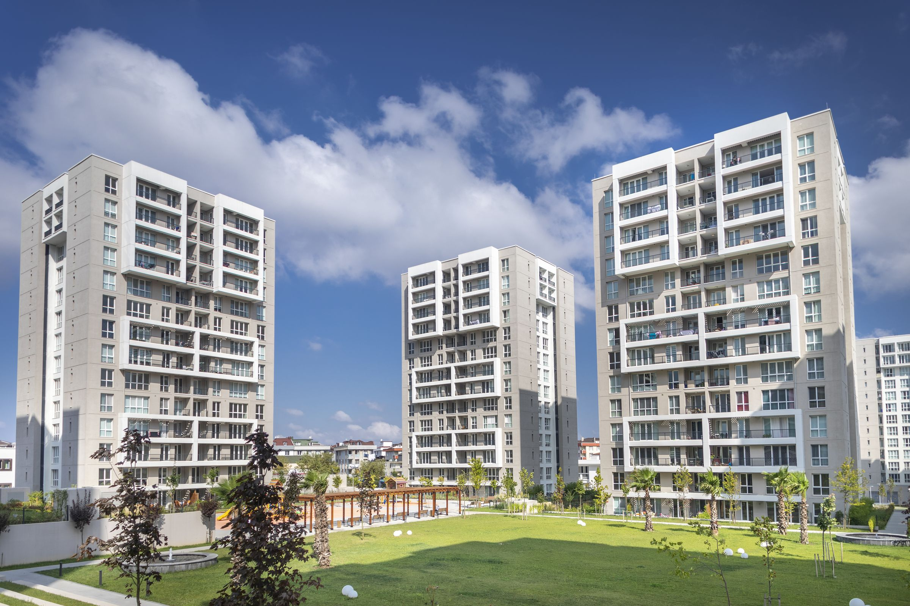

Hakkımızda
Geleneğin Gücü, Geleceğin İnşası
Hakkımızda
Türkiye’nin ilk Gayrimenkul Yatırım Ortaklığı Şirketi olarak 12 Ocak 1996 tarihinde kurulan Vakıf GYO, güçlü sermayesi, her geçen gün artan portföy büyüklüğü ve piyasa değerinin yanı sıra güvenilir ortaklık yapısı ile de sektörde önemli bir yere sahiptir.
Türkiye’nin en büyük 2. bankası olan T. Vakıflar Bankası T.A.O.’nun hâkim ortağı olduğu Şirketimiz, 24 Aralık 1996 tarihinde paylarını halka arz etmiş olup Borsa İstanbul’da VKGYO kodu ile işlem görmektedir.
Sembol yapılarıyla sektörde değişime yön veren, referans bir kuruluş olma vizyonuna sahip Şirketimiz, Ülkemiz ve sektörümüze değer katmakla birlikte, düzenli kira ve yüksek portföy getirisi sağlayarak büyüme azmini kararlılıkla sürdürmektedir.
- 12 Ocak 1996
- Kuruluş
- 24 Aralık 1996
- Halka arz
- VKGYO
- Borsa İstanbul
Temel Amaç
Temel Amaç
Geleneğimizden aldığımız güçle, geleceğin yaşam alanlarını inşa eder, paydaşlarımıza sürdürülebilir değer sunarız.
Vizyon
Yeniliğe öncülük eden güvenilir ve sürdürülebilir projelerle, sektörde referans kuruluş olmak.
Kurum Kültürü ve Değerler
Farkındalığımızı geliştirerek; adil, şeffaf, güvene dayalı ortak duygu ve başarı odaklı, sürekli öğrenen ortak akıl ile insan ve çevreye duyarlı, “biz” kültürünü yaşar, yaşatırız.
Yönetim Politikamız
Sürdürülebilir ekosistem içinde kaliteli yaşam alanları ile değer sunarız.
Tam Uyumluluk
Tüm yasal ve uymakla yükümlü olduğumuz diğer şartlara, şeffaflıkla uyum sağlarız.
Sürekli Gelişme
Değişimi yöneterek ve kaynakları etkin kullanarak sürekli gelişim sağlarız.
Mutlu Müşteri
Sunduğumuz ürün ve hizmetlerle, beklentilerin ötesinde ve güven veren bir müşteri deneyimi yaşatırız.
Mutlu Çalışan
Vakıf GYO çalışanları olarak biz, ortak akıl ve ortak duygu ile sağlıklı bir kurum iklimi oluştururuz.

Vakıf GYO 30 Yaşında
Türkiye’nin ilk gayrimenkul yatırım ortaklığı olarak, 30 yıldır güçlü Türkiye’nin temellerini atıyoruz. Birlikte nice yıllara…